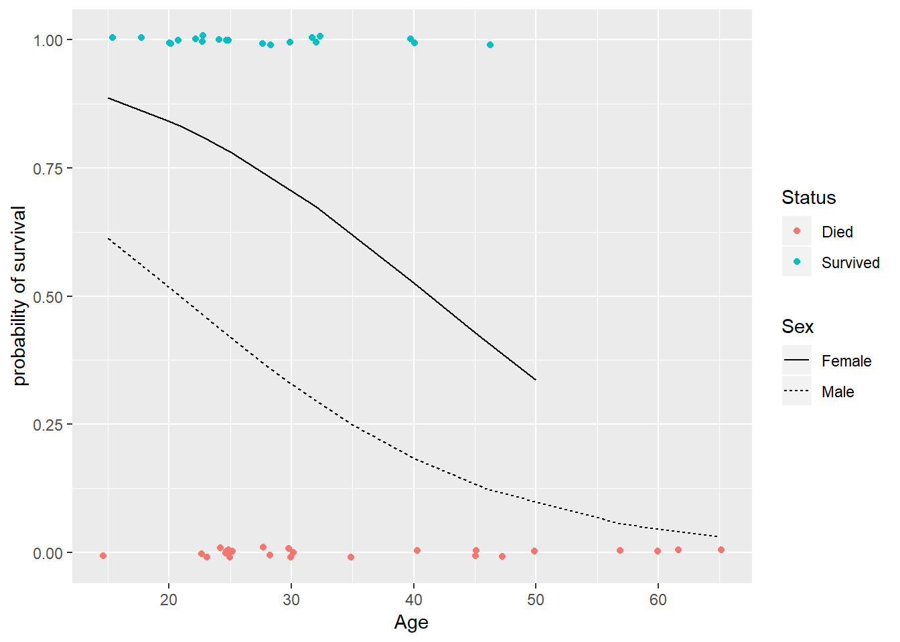
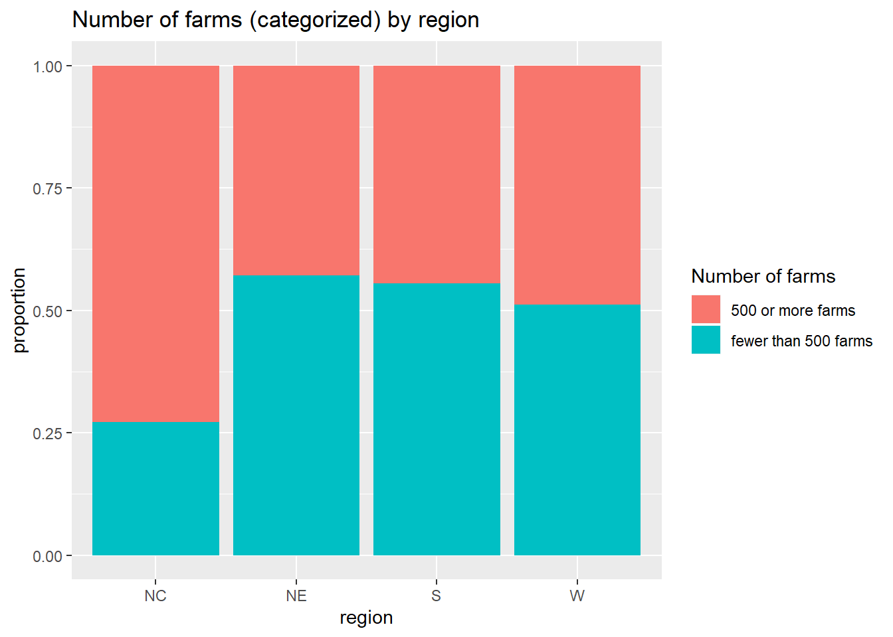

C R for basic data analysis
C.1 Basics
C.1.1 Quick Tips
- In the Console window: You type commands after the prompt
>and hit Enter to execute the command. The results of the command will be displayed below the command and preceded by a line counter enclosed in brackets (e.g. [1]). - You can scroll back to, edit, and execute previous commands using the up arrow on your keyboard.
- If you prematurely hit enter before a command is completed to R’s satisfaction you will see a + prompt which asks you to finish the command. Simply complete the command after the + and hit Enter. If you get stuck in a cycle of + prompts you can get back to a fresh command prompt
>by hitting the Esc key. For example, try:
> 1+3 <ENTER>
[1] 4
> 1+
+ 3 <ENTER>
[1] 4
> 1+
+ <ESC>
User interrupt requested- For information about a command type
?commandname.
C.1.2 Objects
Everything in R is an object. You can assign a name to an object by using the assignment operator <-. You can see the current list of objects in your R workspace by typing ls() or by looking in the Environment tab in Rstudio. You can remove objects from your workspace with the command rm(name) where name is the name of the object you want to delete.
C.1.3 Vectors
Vectors are a simple type of object and even single numbers (called scalars) are vectors with a length of 1. Here are a few ways to create vectors.
The : operator creates a sequence of numbers that increase or decrease by 1.
The seq function also creates sequences of a given length or increment.
> seq(1,3,by=.5)
## [1] 1.0 1.5 2.0 2.5 3.0
> seq(1,3,length=10)
## [1] 1.000000 1.222222 1.444444 1.666667 1.888889 2.111111 2.333333
## [8] 2.555556 2.777778 3.000000Use the combine function c() to create any particular arrangement:
> c(5,2,4,-1)
## [1] 5 2 4 -1
> x <- c(5,2,4,-1)
> x
## [1] 5 2 4 -1
> y <- c(x,0:3,x)
> y
## [1] 5 2 4 -1 0 1 2 3 5 2 4 -1The rep command allows repetition:
You can also create vectors of characters (letters or words):
Logical (true/false) vectors do not use double quotes:
C.1.4 Arithmetic
Here’s some basic commands:
> x <- 1:4
> x*2
## [1] 2 4 6 8
> x^2
## [1] 1 4 9 16
> (x-2)/3
## [1] -0.3333333 0.0000000 0.3333333 0.6666667Arithmetic involving vectors is done elementwise.
Special functions are available that work elementwise or on the entire vector. Here are a few:
> sqrt(x)
## [1] 1.000000 1.414214 1.732051 2.000000
> log(x)
## [1] 0.0000000 0.6931472 1.0986123 1.3862944
> exp(x)
## [1] 2.718282 7.389056 20.085537 54.598150
> sum(x)
## [1] 10
> mean(x)
## [1] 2.5
> sd(x)
## [1] 1.290994
> sqrt(sum(x^2))
## [1] 5.477226More summary stats can be found with the commands min, max, median, quantile, summary, and var.
You usually use the special functions above with numeric vectors (int or num), but you can use these functions with logical vectors too. The logical vector is coerced into a integer vector with 1 for TRUE and 0 for FALSE.
C.1.5 Subsetting
You can access one or more elements in a vector by specifying a certain index of elements within the vector: vector[index].
The first element of w:
The first and third elements:
All elements except the first and third:
The elements that are at most 40:
The position of these elements that are at most 40:
The mean of w and the mean of only the elements in w that are less than or equal to 4:
Expressions involving inequalities create a logical vector which is TRUE when the expression is true:
> w <= 40
## [1] TRUE FALSE TRUE FALSE TRUE TRUE
> w == 40
## [1] FALSE FALSE FALSE FALSE TRUE FALSESo when a vector is indexed by a TRUE/FALSE vector only the TRUE entries will be displayed (and used in any command involving this vector). Here is the logical vector for entries in w that are not equal to 40:
Here are the values of the entries of w excluding those equal to 40:
Here is the sum of the values of the entries of w excluding those equal to 40:
Adding a logical (T/F) vector tells you how many elements in the vector are equal to TRUE. Here is the number of entries in w that are not equal to 40:
Finally, the vector operators | and & mean OR and AND, respectively. We can find the entries in w that are less than 30 OR greater than 50 with
We can find the entries that are at most 50 AND at least 30 with
C.2 Data
C.2.1 Reading Data into R
The most common way to read data into R is by storing it in a comma separated values (.csv) format. Non-textbook data files for this class will either be on my webpage http://people.carleton.edu/~kstclair/data.
You can read a .csv file into R using its URL or file path (which is system dependent):
Alternatively, you can download (then upload if using mirage) a needed data set to your data folder located in your Mathxxx folder. Once this is done, and your Mathxxx project is started, you can easily read the data set into R using the command
You don’t need an extended file path name because your project should set your working directory to your Mathxxx folder and the data folder containing you .csv is a subfolder in this working directory.
Many textbooks have R packages that contain data sets used in the book. Here I’ll use the SDaA packge used in my Math 255 (Sampling) course. Once you load this library you have automatic access to add textbook data files identified by the name given in the book.
> # install.packages("SDaA") # only run this once, ever
> library(SDaA)
> class(agstrat)
## [1] "data.frame"The object agstrat is called a data frame. The rest of this handout will explain how R data frames can be explored, used and changed.
C.2.2 Investigating a Data Frame
You can see an entire data frame by typing its name. You can see the first or last 5 rows of a data frame with the following commands:
> head(agstrat)
## county state acres92 acres87 acres82 farms92 farms87 farms82
## 1 PIERCE COUNTY NE 297326 332862 319619 725 857 865
## 2 JENNINGS COUNTY IN 124694 131481 139111 658 671 751
## 3 WAYNE COUNTY OH 246938 263457 268434 1582 1734 1866
## 4 VAN BUREN COUNTY MI 206781 190251 197055 1164 1278 1464
## 5 OZAUKEE COUNTY WI 78772 85201 89331 448 483 527
## 6 CLEARWATER COUNTY MN 210897 229537 213105 583 699 693
## largef92 largef87 largef82 smallf92 smallf87 smallf82 region rn
## 1 54 54 42 58 67 48 NC 805
## 2 14 13 14 42 36 38 NC 241
## 3 20 19 16 175 186 184 NC 913
## 4 23 17 9 56 66 55 NC 478
## 5 6 5 5 56 49 48 NC 1028
## 6 34 32 23 8 19 13 NC 496
## weight
## 1 10.23301
## 2 10.23301
## 3 10.23301
## 4 10.23301
## 5 10.23301
## 6 10.23301
> tail(agstrat)
## county state acres92 acres87 acres82 farms92 farms87 farms82
## 295 FRANKLIN COUNTY WA 670149 660813 632519 857 894 856
## 296 LEA COUNTY NM 2149450 2220431 2178568 544 561 534
## 297 THURSTON COUNTY WA 59890 56799 67628 811 806 856
## 298 CARSON CITY (IC) NV 5361 17859 18780 28 37 34
## 299 BANNOCK COUNTY ID 325338 358189 352306 588 655 617
## 300 LA PLATA COUNTY CO 587339 613579 589167 709 682 625
## largef92 largef87 largef82 smallf92 smallf87 smallf82 region rn
## 295 127 140 120 107 109 101 W 371
## 296 208 205 191 59 67 63 W 259
## 297 5 4 4 171 143 151 W 394
## 298 3 2 2 15 15 17 W 295
## 299 79 81 83 98 112 106 W 148
## 300 67 79 66 25 39 33 W 112
## weight
## 295 10.29268
## 296 10.29268
## 297 10.29268
## 298 10.29268
## 299 10.29268
## 300 10.29268You can get the dimensions (# rows by # columns) and variable names is a data frame with
You can see the variable names with
> names(agstrat)
## [1] "county" "state" "acres92" "acres87" "acres82" "farms92"
## [7] "farms87" "farms82" "largef92" "largef87" "largef82" "smallf92"
## [13] "smallf87" "smallf82" "region" "rn" "weight"or variable names and types with the structure command
> str(agstrat)
## 'data.frame': 300 obs. of 17 variables:
## $ county : Factor w/ 261 levels "ALEXANDER COUNTY",..: 180 115 254 241 175 37 186 94 243 212 ...
## $ state : Factor w/ 46 levels "AL","AR","AZ",..: 27 13 32 20 44 21 37 10 22 14 ...
## $ acres92 : int 297326 124694 246938 206781 78772 210897 507101 332358 402202 535359 ...
## $ acres87 : int 332862 131481 263457 190251 85201 229537 552844 337990 396638 503582 ...
## $ acres82 : int 319619 139111 268434 197055 89331 213105 541015 355823 400466 513458 ...
## $ farms92 : int 725 658 1582 1164 448 583 321 986 1249 488 ...
## $ farms87 : int 857 671 1734 1278 483 699 371 1065 1251 518 ...
## $ farms82 : int 865 751 1866 1464 527 693 341 1208 1320 571 ...
## $ largef92: int 54 14 20 23 6 34 163 56 86 216 ...
## $ largef87: int 54 13 19 17 5 32 180 36 78 204 ...
## $ largef82: int 42 14 16 9 5 23 176 42 69 193 ...
## $ smallf92: int 58 42 175 56 56 8 10 90 42 16 ...
## $ smallf87: int 67 36 186 66 49 19 24 115 38 37 ...
## $ smallf82: int 48 38 184 55 48 13 16 132 28 24 ...
## $ region : Factor w/ 4 levels "NC","NE","S",..: 1 1 1 1 1 1 1 1 1 1 ...
## $ rn : int 805 241 913 478 1028 496 969 42 676 383 ...
## $ weight : num 10.2 10.2 10.2 10.2 10.2 ...You can view the data frame in Rstudio’s viewer window with
C.2.3 Accessing Data
You can also access and edit information in a data frame by subscripting the data frame. Suppose you want to look at the variable farms92 (the number of farms per county in 1992). This variable is the 6th column in the data frame. You can access its contents with either command:
> agstrat[,6]
## [1] 725 658 1582 1164 448 583 321 986 1249 488 1308 657 974 780
## [15] 293 201 362 309 500 530 491 305 1383 740 325 783 440 832
## [29] 682 198 283 1000 547 953 771 979 427 963 545 942 949 544
## [43] 822 955 1421 532 272 1669 308 401 171 480 1433 900 378 58
## [57] 760 1216 1086 833 682 1280 1262 1029 1190 618 554 497 744 698
## [71] 786 1305 1058 855 741 828 1140 509 759 1080 658 663 1447 1398
## [85] 511 1529 623 742 386 468 738 759 746 680 792 327 777 205
## [99] 1190 629 426 395 721 1367 659 249 550 440 438 74 668 147
## [113] 488 1367 395 940 602 716 0 433 451 142 537 427 689 179
## [127] 14 547 872 1444 549 345 235 406 40 705 169 394 219 774
## [141] 74 561 290 414 781 1037 992 342 179 2760 56 315 49 1226
## [155] 389 226 334 303 1152 403 2086 946 1342 612 407 986 199 17
## [169] 704 1120 127 261 642 348 1360 297 404 114 1582 328 404 34
## [183] 330 132 151 966 146 374 694 455 838 915 812 732 540 108
## [197] 419 1609 417 560 1903 1956 270 433 617 910 298 288 456 199
## [211] 507 772 476 113 440 110 1004 199 339 818 689 491 659 215
## [225] 301 606 355 376 695 889 1234 532 195 711 515 1547 90 651
## [239] 361 147 747 33 128 137 940 477 445 278 447 162 280 640
## [253] 1579 29 1031 1006 320 849 1232 267 1441 23 850 612 733 451
## [267] 179 641 233 661 495 195 508 3157 442 358 107 149 1696 1027
## [281] 415 490 418 134 257 525 599 366 16 874 419 1054 1257 110
## [295] 857 544 811 28 588 709
> agstrat$farms92
## [1] 725 658 1582 1164 448 583 321 986 1249 488 1308 657 974 780
## [15] 293 201 362 309 500 530 491 305 1383 740 325 783 440 832
## [29] 682 198 283 1000 547 953 771 979 427 963 545 942 949 544
## [43] 822 955 1421 532 272 1669 308 401 171 480 1433 900 378 58
## [57] 760 1216 1086 833 682 1280 1262 1029 1190 618 554 497 744 698
## [71] 786 1305 1058 855 741 828 1140 509 759 1080 658 663 1447 1398
## [85] 511 1529 623 742 386 468 738 759 746 680 792 327 777 205
## [99] 1190 629 426 395 721 1367 659 249 550 440 438 74 668 147
## [113] 488 1367 395 940 602 716 0 433 451 142 537 427 689 179
## [127] 14 547 872 1444 549 345 235 406 40 705 169 394 219 774
## [141] 74 561 290 414 781 1037 992 342 179 2760 56 315 49 1226
## [155] 389 226 334 303 1152 403 2086 946 1342 612 407 986 199 17
## [169] 704 1120 127 261 642 348 1360 297 404 114 1582 328 404 34
## [183] 330 132 151 966 146 374 694 455 838 915 812 732 540 108
## [197] 419 1609 417 560 1903 1956 270 433 617 910 298 288 456 199
## [211] 507 772 476 113 440 110 1004 199 339 818 689 491 659 215
## [225] 301 606 355 376 695 889 1234 532 195 711 515 1547 90 651
## [239] 361 147 747 33 128 137 940 477 445 278 447 162 280 640
## [253] 1579 29 1031 1006 320 849 1232 267 1441 23 850 612 733 451
## [267] 179 641 233 661 495 195 508 3157 442 358 107 149 1696 1027
## [281] 415 490 418 134 257 525 599 366 16 874 419 1054 1257 110
## [295] 857 544 811 28 588 709
> agstrat[,"farms92"]
## [1] 725 658 1582 1164 448 583 321 986 1249 488 1308 657 974 780
## [15] 293 201 362 309 500 530 491 305 1383 740 325 783 440 832
## [29] 682 198 283 1000 547 953 771 979 427 963 545 942 949 544
## [43] 822 955 1421 532 272 1669 308 401 171 480 1433 900 378 58
## [57] 760 1216 1086 833 682 1280 1262 1029 1190 618 554 497 744 698
## [71] 786 1305 1058 855 741 828 1140 509 759 1080 658 663 1447 1398
## [85] 511 1529 623 742 386 468 738 759 746 680 792 327 777 205
## [99] 1190 629 426 395 721 1367 659 249 550 440 438 74 668 147
## [113] 488 1367 395 940 602 716 0 433 451 142 537 427 689 179
## [127] 14 547 872 1444 549 345 235 406 40 705 169 394 219 774
## [141] 74 561 290 414 781 1037 992 342 179 2760 56 315 49 1226
## [155] 389 226 334 303 1152 403 2086 946 1342 612 407 986 199 17
## [169] 704 1120 127 261 642 348 1360 297 404 114 1582 328 404 34
## [183] 330 132 151 966 146 374 694 455 838 915 812 732 540 108
## [197] 419 1609 417 560 1903 1956 270 433 617 910 298 288 456 199
## [211] 507 772 476 113 440 110 1004 199 339 818 689 491 659 215
## [225] 301 606 355 376 695 889 1234 532 195 711 515 1547 90 651
## [239] 361 147 747 33 128 137 940 477 445 278 447 162 280 640
## [253] 1579 29 1031 1006 320 849 1232 267 1441 23 850 612 733 451
## [267] 179 641 233 661 495 195 508 3157 442 358 107 149 1696 1027
## [281] 415 490 418 134 257 525 599 366 16 874 419 1054 1257 110
## [295] 857 544 811 28 588 709If you just want the first two entries in farms92:
The variable region is a categorical variable, or factor variable to R. We can see the levels of region with
> str(agstrat$region)
## Factor w/ 4 levels "NC","NE","S",..: 1 1 1 1 1 1 1 1 1 1 ...
> levels(agstrat$region)
## [1] "NC" "NE" "S" "W"So region has 4 levels called NC, NE, S, and W. Note that these levels are ordered alphabetically, which is typically done with factor variables from data sets that are read into R.
C.2.4 Subsetting a Data Frame
You can subset a data frame just as you can subset a vector (see the Basics handout). We might want to subset a data frame to extract certain columns (variables), or we may want to extract certain rows (observations), or some combination of both.
Suppose you want a data frame that only contains the variables region and farms92: One way to do this is with the select command from the dplyr package:
> library(dplyr)
> agstrat2 <- select(agstrat, region, farms92)
> str(agstrat2)
## 'data.frame': 300 obs. of 2 variables:
## $ region : Factor w/ 4 levels "NC","NE","S",..: 1 1 1 1 1 1 1 1 1 1 ...
## $ farms92: int 725 658 1582 1164 448 583 321 986 1249 488 ...Suppose you want a data frame that only contains data from the north central (NC) and west (W) regions. Here we use the dplyr command filter to specify the criteria that tells us that region should be either "W" or "NC":
> agstrat3 <- filter(agstrat, region %in% c("W", "NC"))
> str(agstrat3)
## 'data.frame': 144 obs. of 17 variables:
## $ county : Factor w/ 261 levels "ALEXANDER COUNTY",..: 180 115 254 241 175 37 186 94 243 212 ...
## $ state : Factor w/ 46 levels "AL","AR","AZ",..: 27 13 32 20 44 21 37 10 22 14 ...
## $ acres92 : int 297326 124694 246938 206781 78772 210897 507101 332358 402202 535359 ...
## $ acres87 : int 332862 131481 263457 190251 85201 229537 552844 337990 396638 503582 ...
## $ acres82 : int 319619 139111 268434 197055 89331 213105 541015 355823 400466 513458 ...
## $ farms92 : int 725 658 1582 1164 448 583 321 986 1249 488 ...
## $ farms87 : int 857 671 1734 1278 483 699 371 1065 1251 518 ...
## $ farms82 : int 865 751 1866 1464 527 693 341 1208 1320 571 ...
## $ largef92: int 54 14 20 23 6 34 163 56 86 216 ...
## $ largef87: int 54 13 19 17 5 32 180 36 78 204 ...
## $ largef82: int 42 14 16 9 5 23 176 42 69 193 ...
## $ smallf92: int 58 42 175 56 56 8 10 90 42 16 ...
## $ smallf87: int 67 36 186 66 49 19 24 115 38 37 ...
## $ smallf82: int 48 38 184 55 48 13 16 132 28 24 ...
## $ region : Factor w/ 4 levels "NC","NE","S",..: 1 1 1 1 1 1 1 1 1 1 ...
## $ rn : int 805 241 913 478 1028 496 969 42 676 383 ...
## $ weight : num 10.2 10.2 10.2 10.2 10.2 ...Note one problem with this new data frame: the region variable still thinks it has 4 levels even though S and NE are not in this data frame
> levels(agstrat3$region)
## [1] "NC" "NE" "S" "W"
> table(agstrat3$region)
##
## NC NE S W
## 103 0 0 41This could create a problem when we want to use the region variable in future analyzes. An easy solution exists using the droplevels command on the data frame
C.2.5 Creating a data frame
One way to create a data frame is to create vectors that will form the variables (columns), then binding them together in a data frame:
> x <- 1:10
> y <- rep(c("a","b"),c(5,5))
> my.data <- data.frame(x=x,y=y)
> str(my.data)
## 'data.frame': 10 obs. of 2 variables:
## $ x: int 1 2 3 4 5 6 7 8 9 10
## $ y: Factor w/ 2 levels "a","b": 1 1 1 1 1 2 2 2 2 2
> my.data
## x y
## 1 1 a
## 2 2 a
## 3 3 a
## 4 4 a
## 5 5 a
## 6 6 b
## 7 7 b
## 8 8 b
## 9 9 b
## 10 10 bC.2.6 Adding a new column to a data frame
Suppose you want to add a variable called w to the data frame my.data.
C.2.7 Missing Data
The missing data value in R is NA. Any blank field (or NA field) in the .csv file will be recognized as a missing value when the data is read into R with the read.csv command. But suppose we have missing data in a data set we’ve entered by hand
> u <- c(NA,2,3,4,5,NA,7,8,9,10)
> v <- c(rep(NA,5), 1:5)
> my.data <- data.frame(my.data,u=u, v=v)
> my.data
## x y w u v
## 1 1 a -0.40686821 NA NA
## 2 2 a -0.42806172 2 NA
## 3 3 a 1.34945599 3 NA
## 4 4 a -0.26430339 4 NA
## 5 5 a 0.49317642 5 NA
## 6 6 b 0.06331178 NA 1
## 7 7 b -0.41968568 7 2
## 8 8 b -1.82135938 8 3
## 9 9 b -0.67694760 9 4
## 10 10 b -0.23665406 10 5We can see which entries in u are missing with the is.na command
or with the summary command:
> summary(my.data)
## x y w u v
## Min. : 1.00 a:5 Min. :-1.82136 Min. : 2.00 Min. :1
## 1st Qu.: 3.25 b:5 1st Qu.:-0.42597 1st Qu.: 3.75 1st Qu.:2
## Median : 5.50 Median :-0.33559 Median : 6.00 Median :3
## Mean : 5.50 Mean :-0.23479 Mean : 6.00 Mean :3
## 3rd Qu.: 7.75 3rd Qu.:-0.01168 3rd Qu.: 8.25 3rd Qu.:4
## Max. :10.00 Max. : 1.34946 Max. :10.00 Max. :5
## NA's :2 NA's :5We can use the drop_na command from the tidyr package to create an NA-free version of our data frame. Applying it to the entire data frame returns only rows that have observations for all variables:
> library(tidyr)
> my.data.noNA <- drop_na(my.data)
> my.data.noNA
## x y w u v
## 7 7 b -0.4196857 7 2
## 8 8 b -1.8213594 8 3
## 9 9 b -0.6769476 9 4
## 10 10 b -0.2366541 10 5There are times when you only want to remove NA’s for a limited number of variables. Add these variable names as arguments to the drop_na command to only remove rows with NA’s for those variables. Here we only remove NAs from u (rows 1 and 6):
> my.data.noNAu <- drop_na(my.data, u)
> my.data.noNAu
## x y w u v
## 2 2 a -0.4280617 2 NA
## 3 3 a 1.3494560 3 NA
## 4 4 a -0.2643034 4 NA
## 5 5 a 0.4931764 5 NA
## 7 7 b -0.4196857 7 2
## 8 8 b -1.8213594 8 3
## 9 9 b -0.6769476 9 4
## 10 10 b -0.2366541 10 5Sometimes data sets (especially “read-world”" data) do not use blank fields to indicate missing data. For example, perhaps an unrealistic value is given as filler for a missing data point, like -99 for a positive integer variable or 9999 for a smaller scale variable. The source where you find your data should tell you if special fields (like -99 or 9999) are used to indicate missing data. Once you determine what the missing data indicator is, you can import the data set using the read.csv command with the added argument na.strings = c("-99"," "). This argument tells R that missing data is coded either as an NA, a blank entry or as a -99 entry.
C.3 EDA
We are using the agstrat data frame from the SDaA package (see Section 1.5.2.1).
C.3.1 Categorical:
The table command is useful when summarizing a categorical variable like region
There are 103 counties in the north central region, 21 in the northeast, 135 in the south, and 41 in the west. We get a contingency table by entering two categorical variables
> table(agstrat$state,agstrat$region)
##
## NC NE S W
## AL 0 0 5 0
## AR 0 0 9 0
## AZ 0 0 0 1
## CA 0 0 0 1
## CO 0 0 0 5
## CT 0 1 0 0
## FL 0 0 4 0
## GA 0 0 15 0
## HI 0 0 0 2
## IA 10 0 0 0
## ID 0 0 0 5
## IL 16 0 0 0
## IN 9 0 0 0
## KS 11 0 0 0
## KY 0 0 15 0
## LA 0 0 3 0
## MA 0 1 0 0
## MD 0 0 2 0
## ME 0 1 0 0
## MI 6 0 0 0
## MN 9 0 0 0
## MO 10 0 0 0
## MS 0 0 6 0
## MT 0 0 0 7
## NC 0 0 16 0
## ND 2 0 0 0
## NE 12 0 0 0
## NJ 0 1 0 0
## NM 0 0 0 2
## NV 0 0 0 2
## NY 0 8 0 0
## OH 4 0 0 0
## OK 0 0 7 0
## OR 0 0 0 4
## PA 0 8 0 0
## SC 0 0 4 0
## SD 7 0 0 0
## TN 0 0 6 0
## TX 0 0 31 0
## UT 0 0 0 4
## VA 0 0 5 0
## VT 0 1 0 0
## WA 0 0 0 7
## WI 7 0 0 0
## WV 0 0 7 0
## WY 0 0 0 1So, for example, the data contains 5 counties in Alabama that are classified as southern. (Note that this isn’t a very interesting summary of two categorical variables, just an easy one to demonstrate the table command using this data set.)
C.3.2 Quantitative:
Basic summary stats commands are
> summary(agstrat$farms92)
## Min. 1st Qu. Median Mean 3rd Qu. Max.
## 0.0 326.5 544.5 637.4 840.8 3157.0
> mean(agstrat$farms92)
## [1] 637.3833
> median(agstrat$farms92)
## [1] 544.5
> sd(agstrat$farms92)
## [1] 448.2621
> min(agstrat$farms92)
## [1] 0
> max(agstrat$farms92)
## [1] 3157We can explore which county(s) have the highest number of farms (3157) in 1992 with
> which(agstrat$farms92 == 3157)
## [1] 274
> agstrat[274,]
## county state acres92 acres87 acres82 farms92 farms87 farms82
## 274 HAWAII COUNTY HI 926607 1007287 1172448 3157 2810 2539
## largef92 largef87 largef82 smallf92 smallf87 smallf82 region rn
## 274 55 60 58 1960 1602 1468 W 142
## weight
## 274 10.29268The 0.05 and 0.95 quantiles (i.e. 5th and 95th percentiles) of farms92 are
meaning that 5% of counties have fewer than 89.2 farms and 95% of counties have fewer than 1441.15 farms.
C.3.3 Quantitative grouped by a categorical
Suppose we want to know the average number of farms per county for each region. The R function tapply(var, grp, fun) will apply the function fun to the variable var for each group in grp and produces a table of output (hence the t in tapply). Here is this command in action for the farms variable
> tapply(agstrat$farms92, agstrat$region, summary)
## $NC
## Min. 1st Qu. Median Mean 3rd Qu. Max.
## 58.0 489.5 738.0 750.7 968.5 1669.0
##
## $NE
## Min. 1st Qu. Median Mean 3rd Qu. Max.
## 0.0 395.0 451.0 528.1 659.0 1367.0
##
## $S
## Min. 1st Qu. Median Mean 3rd Qu. Max.
## 14.0 265.5 440.0 578.6 777.5 2760.0
##
## $W
## Min. 1st Qu. Median Mean 3rd Qu. Max.
## 16.0 257.0 495.0 602.3 733.0 3157.0The average number of farms per county in the northeast region is 528.1.
The R package dplyr can also be used to get numerical summaries by groups using the group_by and summarize commands. Here we string together these two commands with the piping command %>% to get the mean and standard deviation of farms92 for each level of region:
> library(dplyr)
> agstrat %>%
+ group_by(region) %>%
+ summarize(mean(farms92), sd(farms92))
## # A tibble: 4 x 3
## region `mean(farms92)` `sd(farms92)`
## <fct> <dbl> <dbl>
## 1 NC 751. 358.
## 2 NE 528. 359.
## 3 S 579. 472.
## 4 W 602. 558.The output produced by this string of commands is actually a type of a data frame called a tibble.
C.3.4 Graphs
R has very sophisticated graphing capabilities. This handout just gives you a summary of some of the most basic graphs. More complicated graphic features will be explained as needed in class. R has high-level plotting commands that create a complete graph, low-level commands which add to an existing graph, and a graphing window layout par command. Use the help command to see these options, e.g. ?hist for the histogram options.
A bar graph of the categorical variable region is given by

The southern region contains the most counties in our sample (135) and the north east region the fewest counties (21). We can add a label to the y-axis and a title to the plot by adding the arguments

A histogram and boxplot of farms92 are given by

We can get a side-by-side boxplot of farms92 by region with
Suppose we want to look at the distribution of counties across regions grouped by counties with fewer than 500 farms vs. 500 or more farms. First we need to create a factor variable that identifies counties as having less or more than 500 farms:
> agstrat$farms500 <- ifelse(agstrat$farms92 < 500, "fewer than 500 farms", "500 or more farms")
> table(agstrat$farms500)
##
## 500 or more farms fewer than 500 farms
## 164 136The we create the stacked bar graph for farms500 grouped by region using ggplot2:
> library(ggplot2)
> ggplot(agstrat, aes(x=region, fill = farms500)) +
+ geom_bar(position = "fill") +
+ labs(y="proportion", fill = "Number of farms",
+ title = "Number of farms (categorized) by region")
> prop.table(table(agstrat$region, agstrat$farms500), 1)
##
## 500 or more farms fewer than 500 farms
## NC 0.7281553 0.2718447
## NE 0.4285714 0.5714286
## S 0.4444444 0.5555556
## W 0.4878049 0.5121951Of the 103 counties in the North Central region, about 72.8% have 500 or more farms. Of the 135 counties in the Southern region, about 44.4% have 500 or more farms.
We can also use ggplot2 to create histograms of farms92 by region:
> ggplot(agstrat, aes(x=farms92)) +
+ geom_histogram() +
+ facet_wrap(~region) +
+ labs(title = "Number of farms by region")We can also use the ggplot2 package to get side-by-side boxplots grouped by a third variable. Here we can compare the distribution of total farm acreage in 1992 (acres92) by region for counties that have fewer than 500 farms vs. 500 or more farms:
> ggplot(agstrat, aes(x = farms500, y=acres92)) +
+ geom_boxplot() +
+ facet_wrap(~region) +
+ labs(title = "Farm acres by number of farms and region") The relationship between median acreage across the four regions looks similar regardless of how many farms are present in a county (with western counties having the highest acreage). But for all four regions, it looks like the median acreage is highest for counties with fewer than 500 farms. Counties with fewer farms may tend to have larger farms than counties with more (smaller) farms across all four regions.
C.3.5 Reporting Results
Homework and reports should be done using an R Markdown document in RStudio (see Section D). If you do need to copy a graph from Rstudio into another document, use the Copy Plot to Clipboard option in the Export menu.
C.4 Factor variables
Section C.2.3 showed how to determine the levels of a factor variable. There are many more things you may want to do with a categorical variable that is a factor type. Here are a few hints for manipulating a factor.
C.4.1 Renaming factor levels
The R package forcats has a fct_recode command to rename the levels of your factor variable
> library(forcats)
> mydata <- data.frame(myfac=c("a","b","c","c","d","e"))
> table(mydata$myfac)
##
## a b c d e
## 1 1 2 1 1
> mydata$new_myfac <- fct_recode(mydata$myfac,
+ "Aman" = "a",
+ "Barb" = "b",
+ "Chad" = "c",
+ "Daryl" = "d",
+ "Eliza" = "e")
> table(mydata$new_myfac) # check work
##
## Aman Barb Chad Daryl Eliza
## 1 1 2 1 1C.4.2 Recode a categorical variable with many levels
Suppose you have a variable var with response levels strongly agree, agree, disagree, and strongly disagree. You want to create a new version of this variable by combining all agree and all disagree answers. Here is one way to do this:
Any row in the dataset where var is in the set of responses listed (c("strongly agree", "agree")) will be coded at agree in the newvar. All other responses (disagree, and strongly disagree) will be recoded as disagree in the newvar.
If you have lots of levels that you want to collapse into fewer (or you just don’t want to use the ifelse command), then you should use the forcats package command fct_collapse. Here we have a variable called myfac that has levels a-e that we want to collapose into new groups low (just level a), mid (levels b and c) and high (levels d and e)
> mydata <- data.frame(myfac=c("a","b","c","c","d","e"))
> mydata$new_myfac <- fct_collapse(mydata$myfac,
+ low = c("a"),
+ mid = c("b","c"),
+ high = c("d","e"))
> table(mydata$myfac,mydata$new_myfac)
##
## low mid high
## a 1 0 0
## b 0 1 0
## c 0 2 0
## d 0 0 1
## e 0 0 1Just make sure that original factor levels of myfac are correctly spelled in the right-hand side of the assignment expressions.
C.4.3 Converting some factor levels to NAs
Sometimes you have too many levels to handle in a factor variable. Collapsing many levels into fewer is one solution (3.1), or we can create a version of the data that ignores the levels we don’t want to analyze. One way to do this is to turn those levels in NA (missing values) that R usually ignores. We can do this in the read.csv command (see section 1.3) or we can do this in the fct_collapse command or fct_recode
Here we convert the d and e responses in myfac to missing values, while all other levels stay the same:
> mydata$try1 <- fct_recode(mydata$myfac, NULL = "d", NULL = "e")
> summary(mydata$try1)
## a b c NA's
## 1 1 2 2We can use similar syntax in the fct_collapse to both collapse levels and turn d and e into NA:
C.4.4 Changing the order of levels
You can reorder the levels of a factor variable. Suppose newmyfac has responses that are ordered low, mid, and high. You can rearrange the order of these levels using the forcats package is fct_relevel command:
C.4.5 Recode a numerically coded categorical variable
Suppose you have a variable quant that is a categorical variable that was numerically coded (e.g. a 1=a, 2=b, 3=c, etc). You will need to convert this to a factor variable to analyze it correctly. Here is one way to do this:
C.4.6 Recode a factor into a numeric
There are times that a quantitative variable (like age) turns up as a factor after you read your data into R. This is due to at least one response in the column being a text response (non-numeric). R then defaults this column to the factor type.
Suppose you’ve identified all character (text) entries in a variable that need to be either recoded into a number or turned into an NA to be ignored. You can use the readr package’s command parse_number to convert a factor variable into a numeric variable with a “best guess” at how to do this.
For the ages variable with “over 90”, we see that parse_number strips away the “over” text and just leaves the number 90:
> library(readr)
> ages <- factor(c(20, 18, 45, 34,"over 90"))
> ages
## [1] 20 18 45 34 over 90
## Levels: 18 20 34 45 over 90
> new.ages <- parse_number(as.character(ages))
> new.ages
## [1] 20 18 45 34 90For this version of ages, the function pulls the numbers that occur prior to the first character (-):
> ages <- factor(c(20, 18, 45, 34,"90-100"))
> ages
## [1] 20 18 45 34 90-100
## Levels: 18 20 34 45 90-100
> new.ages <- parse_number(as.character(ages))
> new.ages
## [1] 20 18 45 34 90Rather than 90, we may want the entry to be the midpoint between 90 and 100:
> library(dplyr)
> ages2 <- recode(ages, '90-100' = "95")
> ages2
## [1] 20 18 45 34 95
## Levels: 18 20 34 45 95
> new.ages <- parse_number(as.character(ages2))
> new.ages
## [1] 20 18 45 34 95Finally, if there is no numeric value in an entry then parse_number will recode it automatically into an NA and give you a warning that lets you know it did this action:
> ages <- factor(c(20, 18, 45, 34,"way old"))
> ages
## [1] 20 18 45 34 way old
## Levels: 18 20 34 45 way old
> new.ages <- parse_number(as.character(ages))
> new.ages
## [1] 20 18 45 34 NA
## attr(,"problems")
## # A tibble: 1 x 4
## row col expected actual
## <int> <int> <chr> <chr>
## 1 5 NA a number way old
> summary(new.ages)
## Min. 1st Qu. Median Mean 3rd Qu. Max. NA's
## 18.00 19.50 27.00 29.25 36.75 45.00 1